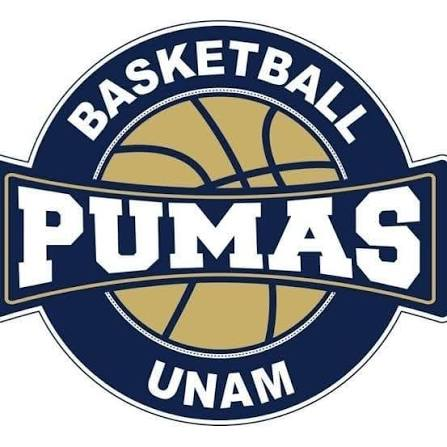
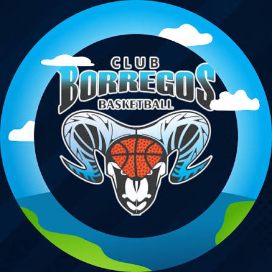
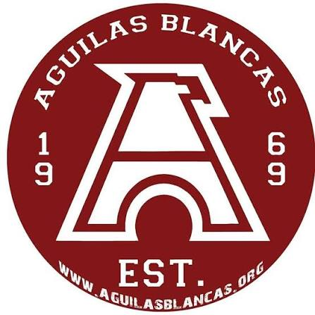

Los equipos más destacados del baloncesto universitario

Los Pumas de la UNAM representan una de las tradiciones más sólidas del baloncesto universitario en México. Fundado en los años 50, el equipo ha logrado múltiples campeonatos universitarios y ha formado jugadores que posteriormente destacaron en la Liga Nacional. Su estilo combina técnica, disciplina y juego colectivo, además de una fuerte conexión con su afición universitaria. La filosofía del equipo busca desarrollar tanto la formación deportiva como académica de sus jugadores, generando un modelo completo de excelencia.

Los Borregos del ITESM son uno de los equipos más competitivos de la Liga Universitaria. Fundado en Monterrey, este club ha destacado por su entrenamiento riguroso, disciplina táctica y desarrollo de jugadores jóvenes que han llegado a la Liga Nacional. Su estilo de juego es rápido y agresivo, combinando velocidad con precisión en ataque y defensa. Los Borregos fomentan valores de trabajo en equipo, compromiso y excelencia, y son reconocidos por su influencia en el baloncesto universitario mexicano.

Las Águilas Blancas del IPN son un equipo emblemático del baloncesto universitario. Fundado en la Ciudad de México, han participado en innumerables torneos nacionales y han formado jugadores destacados que se incorporaron a la Liga Nacional. Su estilo de juego se caracteriza por defensa sólida, presión constante y juego colectivo eficiente. La pasión de sus jugadores y aficionados ha hecho que este club se mantenga como uno de los referentes más importantes dentro del deporte universitario.